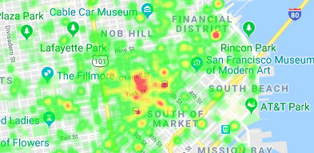

Urgent Calls Heatmap
This presents a heatmap in which the only data points are urgent calls.
Linked below is a heatmap representing the frequency of all types of emergency calls provided in the dataset. The emergency calls are clearly concentrated towards the upper right of the area included in the data which is as one would expect given that this is nearer to the center of the city.
While the frequency heatmap represents all types of emergency calls, however, there is a value in having separate heatmaps of urgent and non-urgent calls. The separated heatmaps are thus provided below, but both are highly similar to the frequency heatmap provided above with only a few minor deviations.
This presents a heatmap in which the only data points are urgent calls.
This presents a heatmap in which the only data points are non-urgent calls.